八月夏天，治愈音符 | 郑洛宇
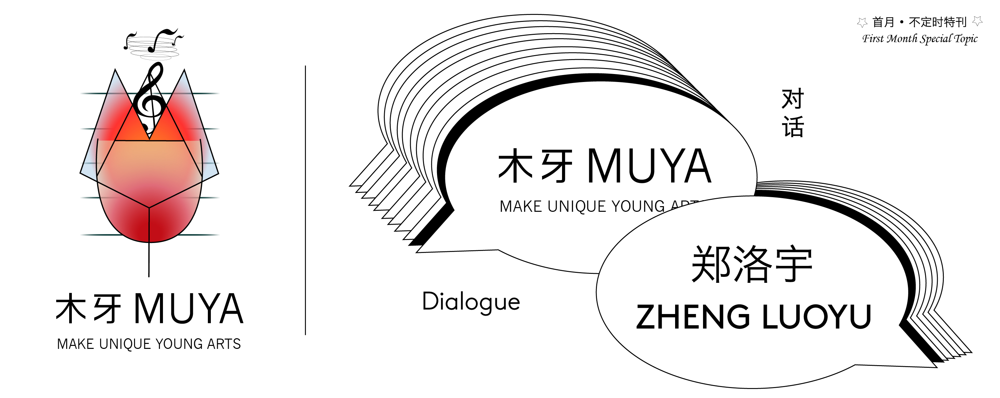欢迎来到木牙Make Unique Young Arts，让我们一起来探索音乐治愈我们的一面!
所谓的艺术没有一个固定的模式，不需要刻意追求和附和。 世界上有一万个人就有一万种不同的声音。声音可以用来模仿，表达，延续，思想，情感，情绪。。。 文字也可以做到和声音一样的事情。但音乐却跳脱了这样的束缚。音乐传递了更为复杂的情感，光用言语无法表述的细腻思想。 音乐就是声音。对于现在的我们，音乐是用来隔绝周围环境，在深夜里疗愈自己，抚慰他人，安抚内心，娱乐自我，和他人建立桥梁的方式。
今天作为特别篇，我们有幸邀请到了郑洛宇来到木牙MUYA，来倾听他对于音乐的感悟和理解。以及钟爱音乐的他用音乐所传递的情感。
The art does not have a fixed pattern, do not need to deliberately pursue and echo. There are ten thousand different voices for every ten thousand people in the world. Sounds can be used to imitate, to express, to perpetuate, to think, to feel... Words can do the same thing as sounds. But music breaks free of such constraints. Music conveys more complex emotions, delicate thoughts that words alone cannot express.
Music is a kind of sounds. For us today, music is a way to insulate ourselves from our surroundings, heal ourselves in the middle of the night, comfort others, comfort our hearts, entertain ourselves, and build Bridges with others.
Today, as a special topic, we have the honor to invite Zheng Luoyu to MUYA to listen to his perception and understanding of music. And his love of music, the emotions he conveys through music.
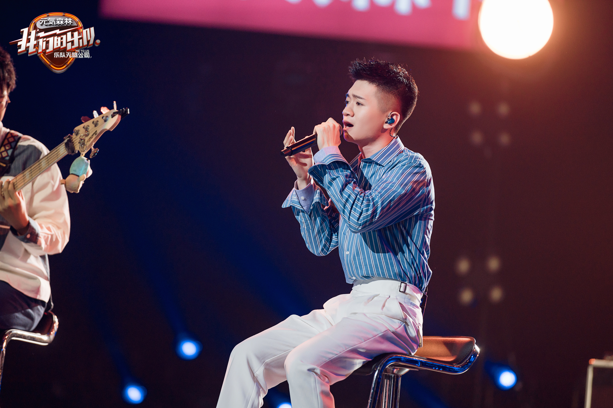
郑洛宇
Hello大家好，我叫郑洛宇。出生在音乐家庭，从小受到父亲的耳濡目染，幼儿园就开始接触小提琴，目前擅长钢琴，架子鼓，吉他，唱歌及创作。也是因为接触音乐比较早，从小就有创作的灵感，喜欢写歌。
我的写歌没有太大的目的性，就是单纯想用音乐，用唱歌、创作的方式来抒发当下的情绪状态。
人活着也就两件事——汲取知识，美化人生。
Zheng Luoyu
Hello, everyone. My name is Zheng Luoyu
I was born in a musical family. Influenced by my father since childhood, I began to play the violin in kindergarten. At present, I am good at piano, drum set, guitar, singing and creation. It is also because of the early contact with music, I have been inspired to create since childhood, like to write songs.
My songwriting has no great purpose, but I simply want to use music, singing and creation to express the current emotional state.

广东潮州人，从小在佛山长大。
目前就读于中央音乐学院音乐治疗专业本科。四岁开始学习小提琴，八岁开始学习钢琴和架子鼓。曾多次参加全国打击乐比赛，荣获金奖。担任过广东省青少年打击乐比赛评委。平时喜欢唱歌和创作，曾在北京一餐厅当任过驻唱歌手及音乐总监。参加过多场线下live演唱会的演出。
2016年以专业第一名的成绩考入中央音乐学院音乐治疗专业。同年参与《不要音乐》MV录制，为外国友人钢琴即兴伴奏。
2017年初在江湖酒吧参加爵士音乐会担任键盘手。同年为民谣歌手马潇的最新专辑进行和声编配及伴唱录音，以及首场演唱会现场伴唱。
2018年参加中央音乐学院“吾爱吾心”心理健康节主题曲征集比赛活动，获得一等奖。同年以组合“很大胃”在QQ音乐、网易云音乐及虾米音乐上发表单曲。为歌手金志文最新专辑中收录的一首单曲《拒绝长大》进行和声伴唱，及受邀拍摄《Nylon》杂志。
2018年担任北京工业大学校园歌手大赛评委。同年参加中央音乐学院“梦想+”歌手大赛，获得十佳歌手称号。
2019年参加“华研国际&网易云音乐第十四届词曲唱作人大赛”十强选手
2019年凭借A Cappella原创《健忘》获得第二届全国大学生音乐“双创”大赛音乐传媒组三等奖
2019年担任协和医学院以及中国戏曲学院歌手大赛评委。
2019年参加江苏卫视与芒果TV共同打造的大型音乐类真人秀节目《我们的乐队》，并作为EzGoin乐队队长带领团队挺进七强。
2020年为抗战疫情，参与合作创作公益歌曲《很疼》。
2020参加腾讯音乐TME live X刘宪华“益达”推广曲的编曲及视频录制
He began to learn violin at the age of four and piano and drum at the age of eight. He has participated in many national percussion competitions and won the gold medal. Served as the judge of guangdong Youth percussion Competition.
He likes singing and writing. He once worked as a resident singer and music director in a restaurant in Beijing.
He participated in many offline live concerts.
In 2016, He was admitted to the Music Therapy major of Central Conservatory of Music as the first in my major. In the same year, He participated in the MV recording of "No Music" and impromptu piano accompaniment for foreign friends.
In early 2017, He participated in a jazz concert as a keyboard player in Jianghu Bar. In the same year, he composed and recorded the backing vocals for folk singer Ma Xiao's latest album, as well as the live backing vocals for his first concert.
In 2018, He won the first prize in the theme song competition of the "I Love my Heart" Mental Health Festival held by The Central Conservatory of Music. In the same year, the group "big stomach" on QQ music, Wangyiyun music and Xiami music released a single. He sang backing vocals for a single from Kim's latest album, "Refusing to Grow up." He was also invited to shoot a cover shoot for Nylon magazine.
He Judged the Campus Singer Contest of Beijing University of Technology in 2018. In the same year, he participated in the "Dream +" Singer Competition of The Central Conservatory of Music and won the title of top 10 Singer.
In 2019, He participated in the top 10 contestants of the 14th huayan international & netease cloud music songwriters competition.
In 2019, He won the third prize in the music media group of the second National College Students' Music "Entrepreneurship and Innovation" Competition by virtue of A Cappella's original "Forgetfulness".
In 2019, He participated in the "I Sing My Dream" original song competition of Central Conservatory of Music and won the second prize.
In 2019, he acted as a judge of the Singer competition of Peking Union Medical College and China National Opera Academy.
In 2019, he participated in our Band, a large-scale music reality show jointly created by Jiangsu SATELLITE TV and Mango TV, and led the team to the top seven as the leader of EzGoin band.
In 2020, he participated in the creation of a charity song "It hurts" for the Anti-Japanese War against the epidemic.
In 2020, He participated in the arrangement and video recording of promotional music of Liu Xianhua's "Yida" on Tencent Music TME Live X.

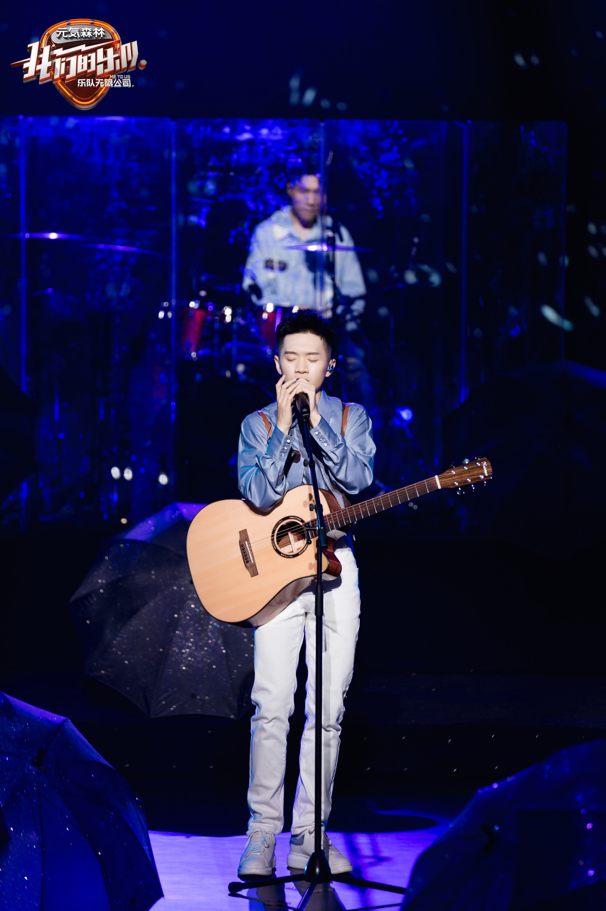

"灵感来源于生活，善于捕捉生活中的点滴，是我创作灵感的一部分。还有一部分，就是不断地学习模仿别人的优秀作品（而非抄袭）。毕竟学一样新事物，都是从模仿开始的"。
"Inspiration comes from life, and I am good at capturing every bit of life, which is part of my creative inspiration. Another part is to constantly learn to imitate the excellent work of others (rather than copying). After all, learning new things starts with imitation."
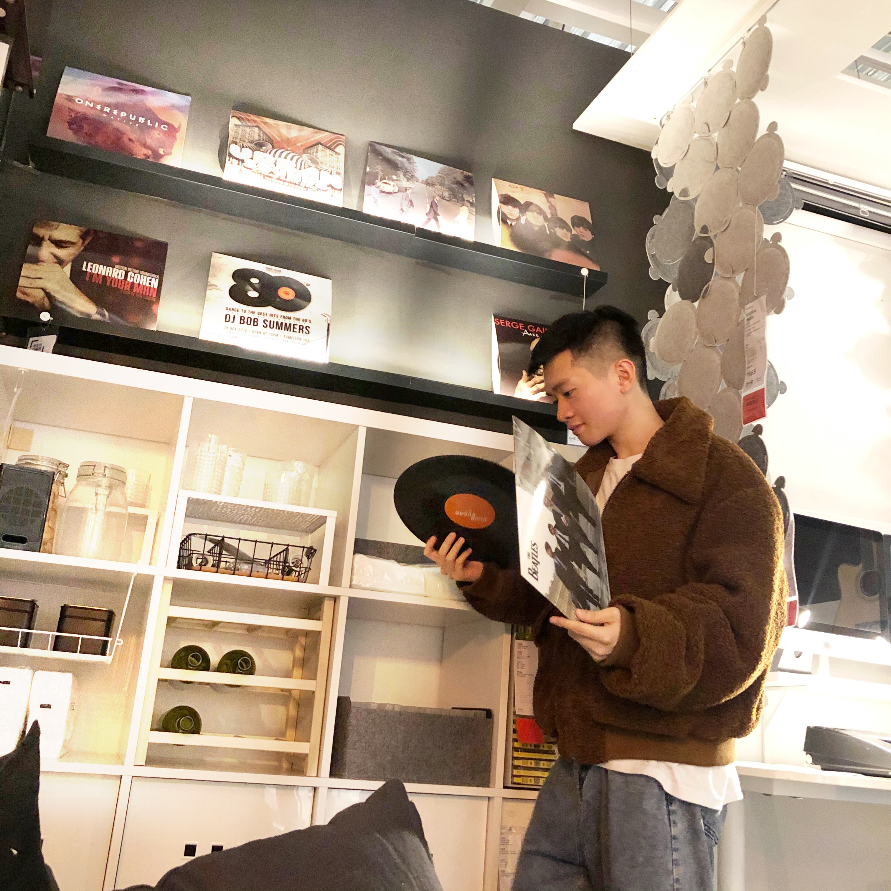
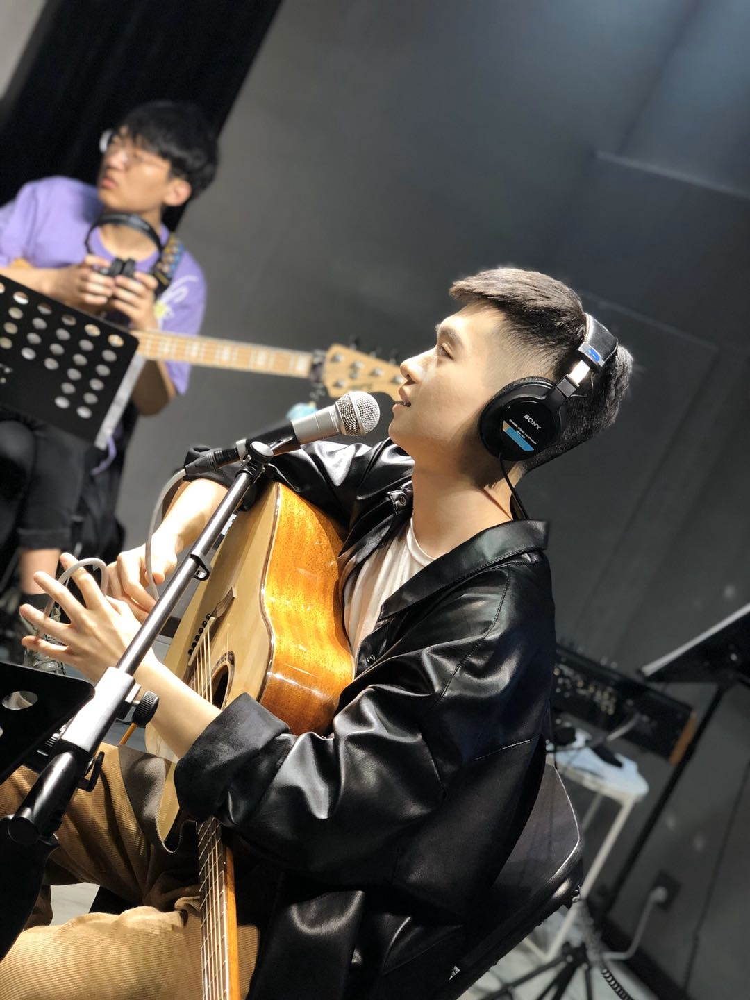
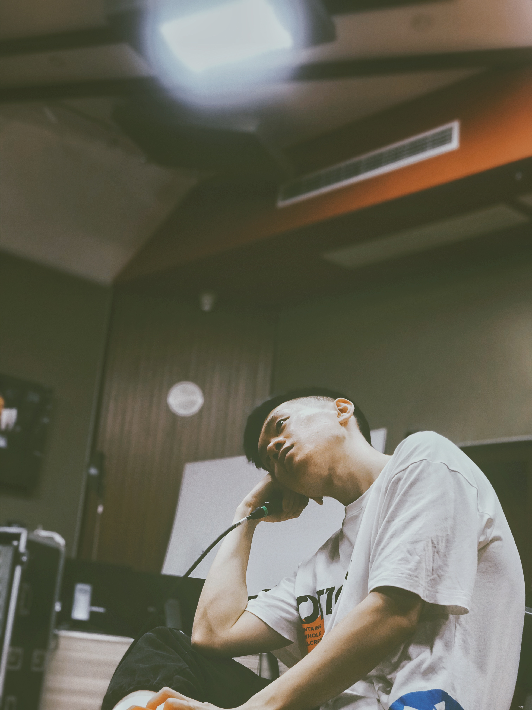

➤ 木牙MUYA:音乐治疗听起来是一个充满治愈性的学科，洛宇可以简单介绍下这个学科吗？音乐治疗和心理学有哪些关联呢？
Music therapy sounds like a very therapeutic discipline. Could You tell us a little bit about it? What is the connection between music therapy and psychology?
郑洛宇 Zheng Luoyu: 音乐治疗简单来说就是运用例如音高、节奏、音色等音乐的元素来帮助来访者进行治疗。它涉及的领域很广，像大家所熟知的心理领域，当然还包括生理、情绪、社交、认知。音乐治疗本身就是一门跨学科专业，所以心理学也是存在于音乐治疗中的。我们需要了解人类心理不同阶段的发展状况，才能够针对来访者的情况对症下药。
Music therapy is simply the use of musical elements such as pitch, rhythm and timbre to help the client with therapy. It covers a wide range of fields, such as the well-known psychological field, but also includes physical, emotional, social and cognitive fields.
Music therapy itself is an interdisciplinary specialty, so psychology also exists in music therapy. We need to understand the different stages of human psychological development in order to be able to respond appropriately to the client's situation.
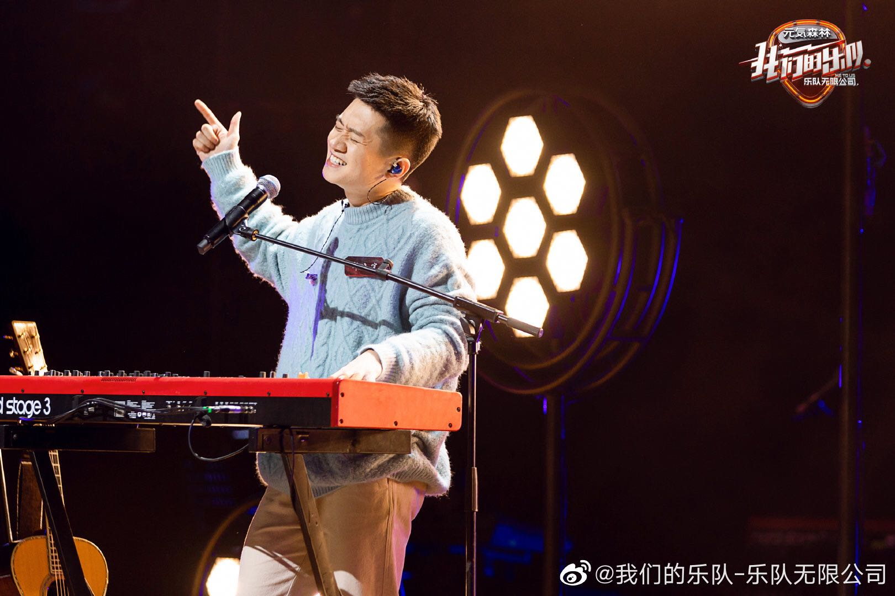
➤ 木牙MUYA:音乐治疗师必备的四件套是声乐，钢琴，吉他和打击乐。作为音乐治疗师的洛宇平时都喜欢用哪些乐器进行创作呢？最喜欢的乐器是什么？
A music therapist's four-piece kit is vocal, piano, guitar, and percussion. What Musical Instruments does Luo Yu like to use as a music therapist? What is your favorite musical instrument?
郑洛宇 Zheng Luoyu: 钢琴是我最擅长的乐器，而且钢琴作为乐器之王，本身就有其在音域、演奏方式等方面的优势，所以我平时也很喜欢用钢琴来进行创作。最喜欢的乐器也无疑是钢琴了。
The piano is my best musical instrument. As the king of Musical Instruments, the piano has its own advantages in range and playing style, so I like to create with the piano very much.My favorite instrument is undoubtedly the piano.
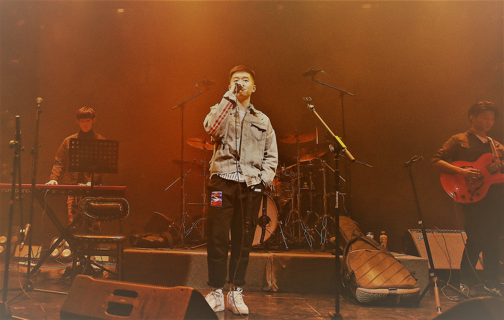
➤ 木牙MUYA: 以专业第一如此优异的成绩考入中央音乐学院的洛宇，向我们展现了同时兼顾学业和专业，其实没有那么难！那在平日的生活中，洛宇是如何分配自己的学习和音乐的时间的呢？有没有什么学习的小技巧？
You were admitted to the Central Conservatory of Music with such excellent results as being the first in your major, and you have shown us that it is not so difficult to give consideration to both your studies and your major at the same time! How do you allocate and manage your time for study and music in daily life? Any tips you can share with us?
郑洛宇 Zheng Luoyu: 时间管理很重要！我本身就是一个比较喜欢把该做的事列出一个时间表的人，不管是用脑记还是用笔记下来。其实对于我来说，这个也不算是什么问题。每天分别安排好学习时间，音乐时间，以及玩耍时间，会让自己条理更清晰，做事更高效。所以做好时间规划就是我的小技巧。
Time management is important! I'm a person who likes to make a schedule of things to do, either in my head or in my notes. In fact, for me, this is not a problem. Setting aside time for study, music, and play each day will make you more organized and productive. So time management is my trick.
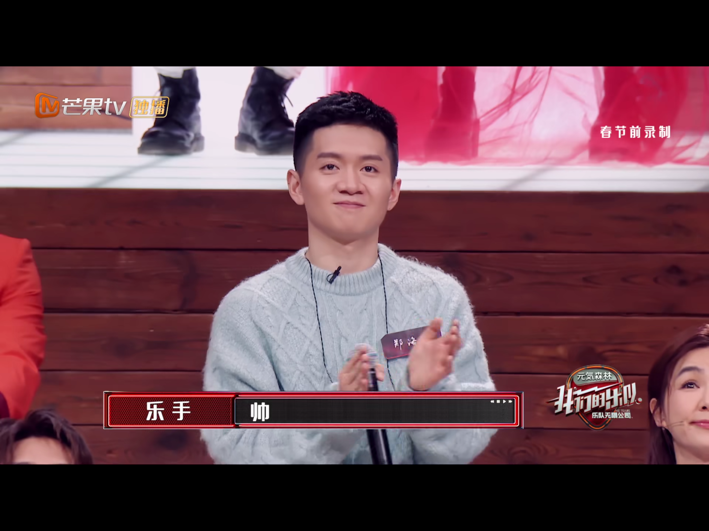
➤ 木牙MUYA: 洛宇的音乐治疗在歌曲的改编和创作在音乐治疗的应用中起到怎么样的作用呢？主要应用于哪些人群领域中呢？通过学习音乐治疗，对洛宇的音乐创作有哪些影响呢？
What role does your music therapy play in the adaptation and creation of songs in the application of music therapy? What are the main population areas? What are the effects of your music creation during studying music therapy?
郑洛宇 Zheng Luoyu: 我们在日常做治疗中，都会进行许多小歌曲的创作，比如治疗前会用到的《你好歌》，治疗结束会用到的《再见歌》以及治疗过程中的一些小曲子，都是我们根据不同的领域不同人群的不同问题状况以及我们的治疗目的去创作和改编的歌曲。而我的音乐创作风格可能会更适用儿童领域。一首歌能不能受到大家的喜爱，取决于这首歌能否让听众产生共鸣。所以通过学习音乐治疗，我觉得对我创作最大的影响就是提高了我写歌的共情能力。
We do in our daily treatment, will be a lot of songs, such as the treatment is used in front of "your song", "farewell song" and for the treatment of end use in the process of treatment a few small piece, we according to different areas for different groups of different status and the aim of treatment for us to create and adaptation of the songs.And my musical style is probably more suited to children.Whether a song is popular or not depends on whether the song resonates with the audience. So by studying music therapy, I think the biggest influence on my writing is to improve my ability to write songs with empathy.
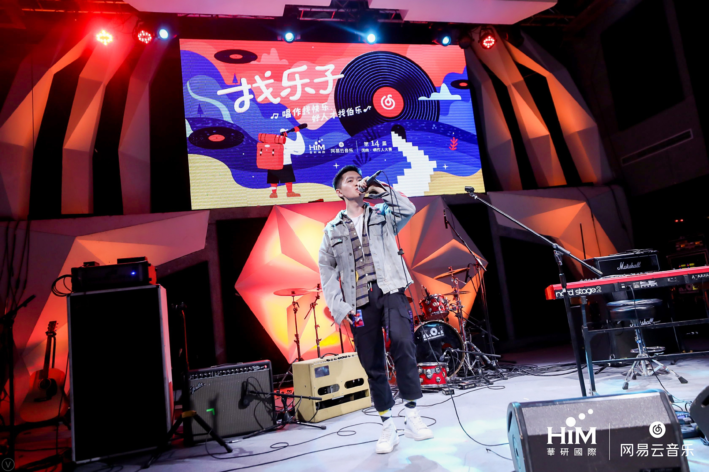
➤ 木牙MUYA: 音乐治疗对于即兴创作的要求特别高，如果是在面对临床人员突发情况，身边没有乐器的情况下，洛宇会做出怎样的补救措施呢？会利用生活中常见的事物作为乐器的替代品吗？
Music therapy has a high requirement for improvisation. What remedial measures would you take when you are facing the emergency of clinical staff without musical Instruments? Do you use common things in life as substitutes for musical Instruments?
郑洛宇 Zheng Luoyu: “音乐无处不在”，说的不仅是生活中处处能听到的现成音乐作品，也是说我们身边随处可见能够用来制造音乐的东西（当然也包括噪音）。而我觉得在音乐治疗中，乐器是次要的，音乐元素才是主要的。如果临时需要我去做治疗而没有任何乐器，我的vocal以及身边可以敲击的破铜烂铁也将成为我的乐器。
"Music is everywhere" is not only about the ready-made music that can be heard everywhere in our lives, but also about the things that can be used to make music (including noise, of course) all around us. And I think in music therapy, Musical Instruments are secondary and musical elements are primary. If I need to perform therapy temporarily without any musical instrument, my vocal performance and the scrap metal that can be struck by my side will also become my musical instrument.

➤ 木牙MUYA: 在选择音乐治疗作为自己的本职专业前，需要面对和知道的是什么？又有哪些能力是需要提前准备的呢？洛宇有什么的话想对选择音乐治疗却还在徘徊的学弟学妹说?
What should you prepare and know before choosing music therapy as my major? What are some of the skills that you need to prepare in advance? Do you have some words for some juniors who want to choose music therapy as a major but are still confused about that?
郑洛宇 Zheng Luoyu: 如果想学好音乐治疗，首先需要提高自己的英语水平。因为目前许多的文献都是来自于国外，也都是英文。音乐治疗最重要的还是音乐。如果一位音乐治疗师连自己的武器都掌握不好，那也无法给来访者带来好的体验。所以学好音乐，掌握好最基本的两样乐器——钢琴跟吉他。
想说的话：我觉得想学习音乐治疗，首先自己要有一颗善良的心，而且自己是真正愿意去学习如何用音乐来帮助别人。但有意愿想尝试也未尝不可，若有这方面的想法，就大胆去试，目前中国的音乐治疗师紧缺，音乐治疗的大家庭需要你们的加入！
If you want to learn music therapy well, you need to improve your English first. Because at present, a lot of literature is from abroad, and it is also in English. The most important thing in music therapy is music. If a music therapist doesn't have a good command of his own weapons, he won't be able to give his client a good experience. So learn music well, master the two most basic instruments -- piano and guitar.
What I want to say: I think if I want to learn music therapy, I should have a kind heart first, and I am really willing to learn how to use music to help others. If you have this idea, try it boldly. There is a shortage of music therapists in China, and the big family of music therapy needs you to join us!
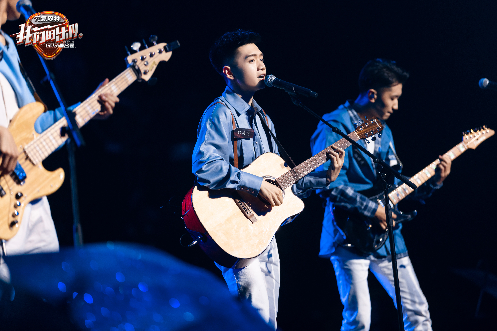
➤ 木牙MUYA: 在组建乐队方面，洛宇认为一个好的乐队的核心是什么样的呢？从对于一个乐队长远的发展来看，乐队中哪些角色不可或缺并占据着重要位置呢？
In terms of forming a band, in your opinion, what is the core of a good band? In terms of the long-term development of a band, which roles are indispensable and important in the band?
郑洛宇 Zheng Luoyu: 作为一个好的乐队核心（也称为队长），首先是自己要知道这个乐队要往哪个方向，哪种风格去发展，才能够带着自己的队员们往同一个目标去进发；其次是需要有较强的决策能力（所以不能有选择恐惧症哈哈哈~）。其实乐队中每个人都是核心，因为每个人都负责着自己最擅长的部分，每个人都能把自己最棒的想法放到自己的演奏中去，都是缺一不可的。而这一问题其实又涉及到乐队的走向。若想做有人声演唱的乐队，主唱声部就是不可或缺的。但如果要做纯音乐的乐队，主奏乐器就是不可或缺的。这个需要具体问题具体分析。
As a good band core (also known as the leader), the first thing is to know which direction the band should go and which style to develop, so that they can take their members to the same goal. The second is the need to have strong decision-making ability (so can't have a phobia of choice ha ha ha ~).
In fact, everyone in the band is the core, because everyone is responsible for what they are best at, and everyone can put their best ideas into their performance, which is indispensable. And this question actually relates to the direction of the band. If you want to be a vocal band, the lead vocals are indispensable. But if you want to be a pure music band, the lead instrument is indispensable. This needs to be analyzed on a case-by-case basis.
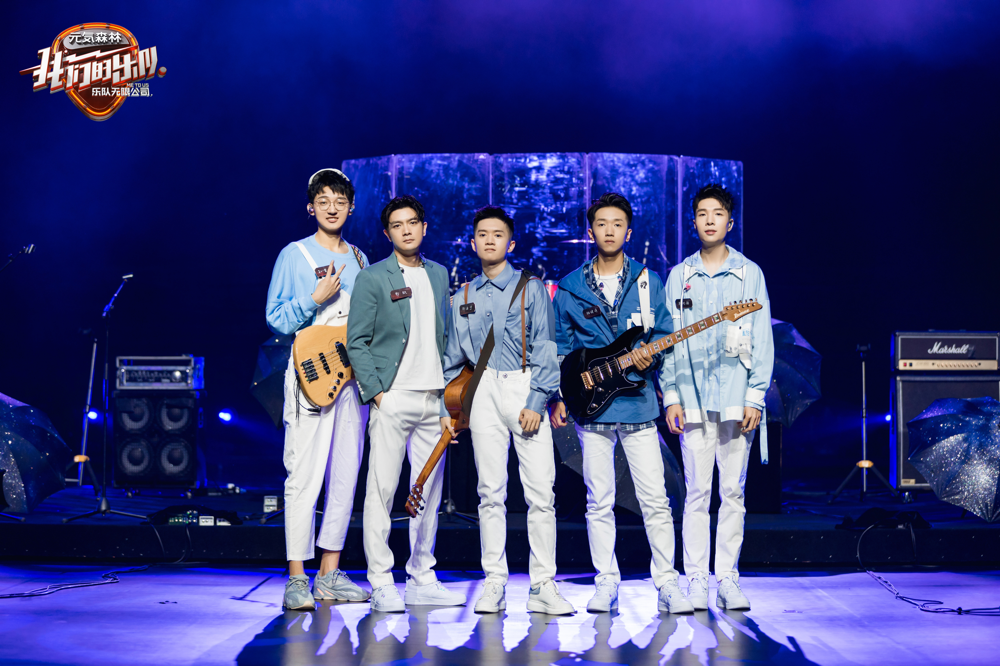
➤ 木牙MUYA: 参加《我们的乐队》的节目，与各个团队进行激烈的竞争的同时，也会收获很多，可以简单跟我们聊聊洛宇参加这档节目的感受？或者洛宇觉得自己参加前后有哪些变化?
Taking part in the show "Me to Us", it will gain a lot from the fierce competition with other teams. Can you tell us briefly about your feelings in this show? Or what changes did you feel before and after your participation？
郑洛宇 Zheng Luoyu: 首先当然是结识了许多玩音乐的朋友，也从大家身上学习到很多之前比较少接触的音乐知识，同时也认识到了综艺节目的拍摄方式，感受了一次全新的体验。参加之后让我真正意识到山外有山，人外有人；让我更坚定，音乐的宇宙里，学海无涯！
First of all, I got to know many friends who play music. I also learned a lot of music knowledge that I had little contact with before. At the same time, I realized the shooting way of variety shows and felt a brand new experience.After participating in it, I really realized that there are mountains beyond the mountains and people beyond the people; Let me more determined, the music of the universe, limitless!
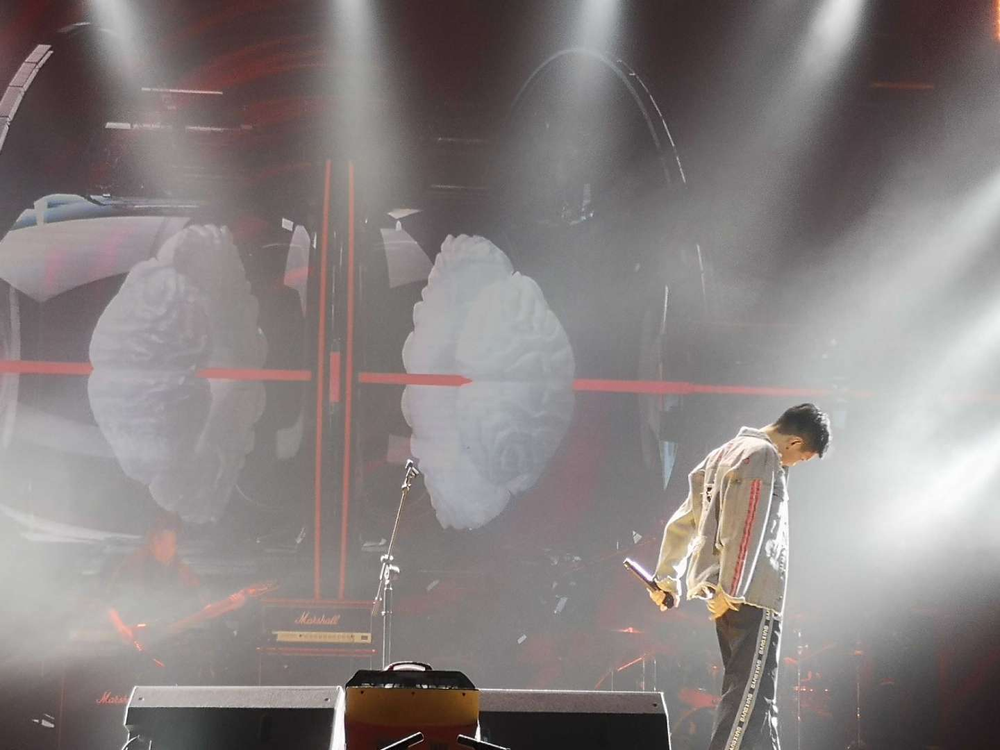
➤ 木牙MUYA: 目前有在做些什么新的工作？又有怎样有趣的事情发生？对于音乐方面有什么新的尝试吗？
What work are you currently doing? And what interesting things happen? Are there any new approaches to music?
郑洛宇 Zheng Luoyu: 参加完节目之后，目前是处于收心的状态，正在学习准备年底的考研。
After taking part in the program, I am now in a state of mind, studying and preparing for the postgraduate entrance exam at the end of the year.
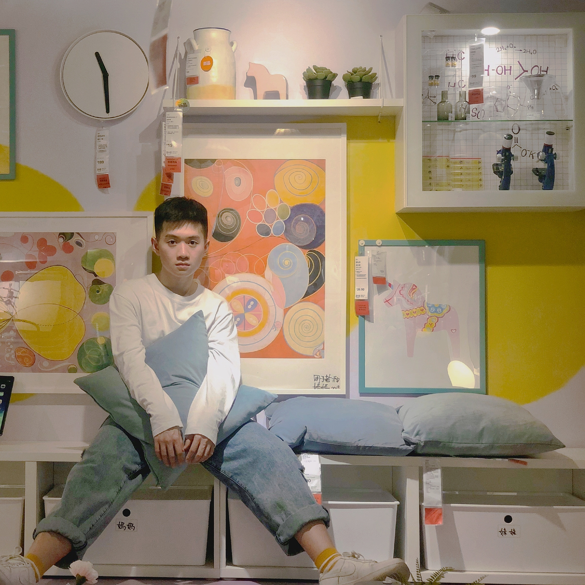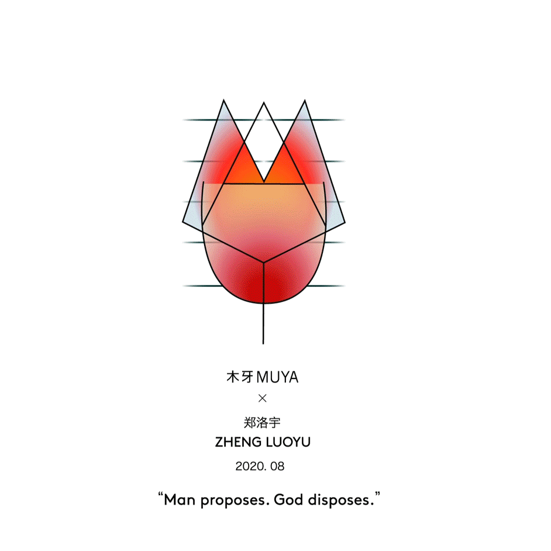
木牙微信订阅号